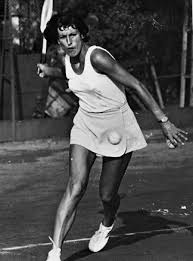

Tóth Gergő
Főnök
A bolt megálmodója, aki minden receptet személyesen felügyel és garantálja a minőséget.
Kovács Réka
Főséf & Ízinnovátor
Új ízkombinációk specialistája, aki a hagyományos recepteket merész csavarokkal frissíti fel.
Nagy Attila
Kolbászséf
A húsok és fűszerek mestere, aki a kolbászok textúráját és fűszerezését hozza tökélyre.
Szabó Éva
Bolti eladó & Vásárlói Tanácsadó

Mindig mosolygós és segítőkész, a vásárlók első számú információforrása.
Kiss Balázs
Marketingmenedzser
A márka hangját viszi tovább, kreatív kampányokkal ismerteti meg a közönséget kolbászainkkal.
Papp Lajos
Raktáros & Logisztikai Felelős
Pontosságával és precizitásával gondoskodik arról, hogy minden termék mindig friss és elérhető legyen.
Kis Tizes
Marketingarc & Gyepshop cégtulaj

A marketingarca, támogatója, illetve partnere Tóth Geri Kolbászboltjának.
❮
❯